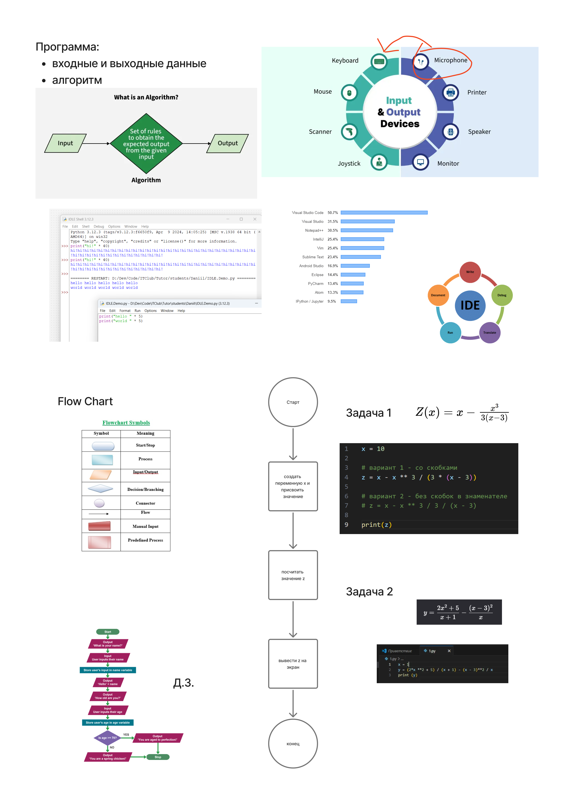

Блок-схемы используются для визуального представления алгоритмов. Вот их основные символы:
| Символ | Значение |
|---|---|
| 🟤 Круг | Начало/Конец |
| 🟦 Прямоугольник | Процесс |
| 🟧 Параллелограмм | Ввод/Вывод |
| 🔺 Ромб | Условие (ветвление) |
IDLE — это стандартная среда разработки для Python, которая включает:
Годится для простейших программ и небольших экспериментов.
IDE — это программа, которая помогает писать, отлаживать и тестировать код.
Функции IDE:
На доске показаны популярные IDE, например:
Напишем программы для вычисления математических выражений или функций.
Функция:
\( Z(x) = x - \frac{x^3}{3(x - 3)} \)
Решение:
x = 10
# Вариант 1: со скобками
# z = x - x ** 3 / (3 * (x - 3))
# Вариант 2: без скобок в знаменателе
z = x - x ** 3 / 3 / (x - 3)
print(z)
Функция:
\( y = \frac{2x^2 + 5}{x + 1} - \frac{(x - 3)^2}{x} \)
Решение:
x = 1
# Вычисляем значение y
y = (2 * x ** 2 + 5) / (x + 1) - ((x - 3) ** 2) / x
print(y)
❗Важно: при вычислении выражений важно учитывать приоритет операций:
**).*, /).+, -).Ввод данных:
input().int(), float().name = input("Введите ваше имя: ")
age = int(input("Введите ваш возраст: "))
Вывод данных:
print().print("Привет, " + name + "!")
print("Ваш возраст:", age)
Пример программы с ветвлением:
age = int(input("Введите ваш возраст: "))
if age >= 70:
print("Вы достигли совершенства!")
else:
print("Вы еще молоды!")
Блок-схема для этой программы показана на доске.
💡Полезные советы:
На данном уроке были рассмотрены основные концепции программирования, такие как алгоритмы, ввод/вывод данных, математические вычисления и работа с IDE. Эти знания будут полезны при решении задач ЕГЭ по информатике.

Выбери любое простое задание ЕГЭ и напиши алгоритм для его решения.
{kind=link}